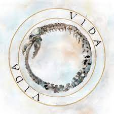
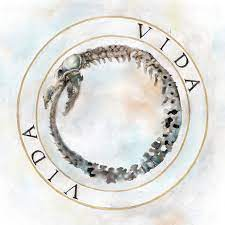

Canserbero
Historia
Tyrone José González Orama nació el 11 de marzo de 1988 en la ciudad de Caracas (Venezuela),
en el seno de una familia muy humilde.
Los cuatro años de edad, Tyrone se muda junto con sus padres,
José Rafael González y Leticia Orama, a Palo Negro, en Macaray, donde pasa su infancia y
adolescencia.
A lo largo de su carrera, lanzó dos álbumes de estudio como solista, Vida (2010) y Muerte (2012).
respectivamente,11 con varias canciones destacadas, como «Pensando en ti», «¿Y la felicidad qué?», (C'est la mort», «Maquiavélico, «Jeremías 17-59), entre otras.
El 20 de enero de 2015, Canserbero fue hallado muerto a las afueras del edificio Camino Real, de la urbanización Andrés Bello en Maracay.
Albunes mas escuchados
 
